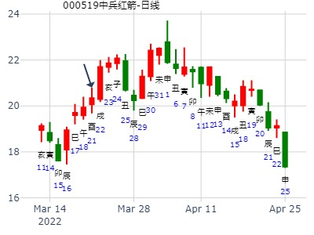
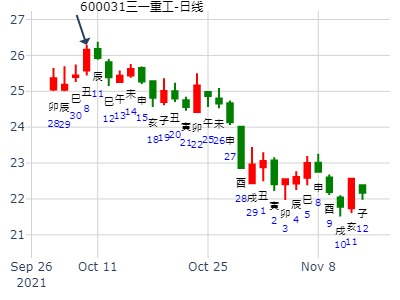

全志科技300458
时间: 2020-01-15
干支: 己亥年丁丑月丁巳日 (旬空: 子丑 )
师静卦 (归魂)
青龙 ▅▅ ▅▅ 父母酉金 应
玄武 ▅▅ ▅▅ 兄弟亥水
白虎 ▅▅ ▅▅ 官鬼丑土
腾蛇 ▅▅ ▅▅ 妻财午火 世
勾陈 ▅▅▅▅▅ 官鬼辰土
朱雀 ▅▅ ▅▅ 子孙寅木
贞，丈人，吉无咎。
主帖标题: 测600132重庆啤酒和150031银华鑫利在2012年2月13日-2月17日走势
测150031银华鑫利在2012年2月13日-2月17日走势
公历起卦时间：2012年2月12日9时15分 (手工指定)
干支：壬辰年 壬寅月 癸卯日 丁巳时 （日空：辰巳）
神煞：驿马－巳 桃花－子 日禄－子 贵人－卯，巳
坎宫：地水师 (归魂) 坎宫：地水师 (归魂)
六神 伏神 本 卦 变 卦
白虎 父母癸酉金 ▅▅ ▅▅ 应 父母癸酉金 ▅▅ ▅▅ 应
腾蛇 兄弟癸亥水 ▅▅ ▅▅ 兄弟癸亥水 ▅▅ ▅▅
勾陈 官鬼癸丑土 ▅▅ ▅▅ 官鬼癸丑土 ▅▅ ▅▅
朱雀 妻财戊午火 ▅▅ ▅▅ 世 妻财戊午火 ▅▅ ▅▅ 世
青龙 官鬼戊辰土 ▅▅▅▅▅ 官鬼戊辰土 ▅▅▅▅▅
玄武 子孙戊寅木 ▅▅ ▅▅ 子孙戊寅木 ▅▅ ▅▅
注： 150031数据难找，用上证代替。
主帖标题: 2014年3月大盘涨跌卦
占事：2014年3月大盘涨跌？
排卦：元亨利贞网六爻在线排盘系统 http://www.china95.net
公历起卦时间：2014年2月28日15时17分 (手工指定)
干支：甲午年 丙寅月 庚午日 甲申时 （日空：戌亥）
神煞：驿马－申 桃花－卯 日禄－申 贵人－丑，未
坎宫：地水师 (归魂) 坎宫：地水师 (归魂)
六神 伏神 本 卦 变 卦
腾蛇 父母癸酉金 ▅▅ ▅▅ 应 父母癸酉金 ▅▅ ▅▅ 应
勾陈 兄弟癸亥水 ▅▅ ▅▅ 兄弟癸亥水 ▅▅ ▅▅
朱雀 官鬼癸丑土 ▅▅ ▅▅ 官鬼癸丑土 ▅▅ ▅▅
青龙 妻财戊午火 ▅▅ ▅▅ 世 妻财戊午火 ▅▅ ▅▅ 世
玄武 官鬼戊辰土 ▅▅▅▅▅ 官鬼戊辰土 ▅▅▅▅▅
白虎 子孙戊寅木 ▅▅ ▅▅ 子孙戊寅木 ▅▅ ▅▅
主帖标题: 2018年3月大盘涨跌卦
占事：2018年3月大盘涨跌？
公历起卦时间：2018年2月28日16时9分 (手工指定)
干支：戊戌年 甲寅月 辛卯日 丙申时 （日空：午未）
神煞：驿马－巳 桃花－子 日禄－酉 贵人－寅，午
坎宫：地水师 (归魂) 坎宫：地水师 (归魂)
六神 伏神 本 卦 变 卦
腾蛇 父母癸酉金 ▅▅ ▅▅ 应 父母癸酉金 ▅▅ ▅▅ 应
勾陈 兄弟癸亥水 ▅▅ ▅▅ 兄弟癸亥水 ▅▅ ▅▅
朱雀 官鬼癸丑土 ▅▅ ▅▅ 官鬼癸丑土 ▅▅ ▅▅
青龙 妻财戊午火 ▅▅ ▅▅ 世 妻财戊午火 ▅▅ ▅▅ 世
玄武 官鬼戊辰土 ▅▅▅▅▅ 官鬼戊辰土 ▅▅▅▅▅
白虎 子孙戊寅木 ▅▅ ▅▅ 子孙戊寅木 ▅▅ ▅▅
主帖标题: 测2020.2.12-2.14哪日是顶？
测2020.2.12-2.14哪日是顶g？
排卦：元亨利贞网六爻在线排盘系统 http://www.china95.net
公历起卦时间：2020年2月13日10时48分 (电脑自动)
干支：庚子年 戊寅月 丙戌日 癸巳时 （日空：午未）
坎宫：地水师 (归魂) 坎宫：地水师 (归魂)
青龙 父母癸酉金 ▅▅ ▅▅ 应 父母癸酉金 ▅▅ ▅▅ 应
玄武 兄弟癸亥水 ▅▅ ▅▅ 兄弟癸亥水 ▅▅ ▅▅
白虎 官鬼癸丑土 ▅▅ ▅▅ 官鬼癸丑土 ▅▅ ▅▅
腾蛇 妻财戊午火 ▅▅ ▅▅ 世 妻财戊午火 ▅▅ ▅▅ 世
勾陈 官鬼戊辰土 ▅▅▅▅▅ 官鬼戊辰土 ▅▅▅▅▅
朱雀 子孙戊寅木 ▅▅ ▅▅ 子孙戊寅木 ▅▅ ▅▅
注：唐龙这贴同一件事，反复电脑自动卦，游戏卦神，仅供参考。
主帖标题: 方大炭素何时上到6.40？现在6.31元星期六
方大炭素何时上到6.40？现在6.31元星期日
公历起卦时间：2021年2月7日19时43分 (电脑自动)
干支：辛丑年 庚寅月 丙戌日 戊戌时 （日空：午未）
坎宫：地水师 (归魂) 坎宫：地水师 (归魂)
六神 伏神 本 卦 变 卦
青龙 父母癸酉金 ▅▅ ▅▅ 应 父母癸酉金 ▅▅ ▅▅ 应
玄武 兄弟癸亥水 ▅▅ ▅▅ 兄弟癸亥水 ▅▅ ▅▅
白虎 官鬼癸丑土 ▅▅ ▅▅ 官鬼癸丑土 ▅▅ ▅▅
螣蛇 妻财戊午火 ▅▅ ▅▅ 世 妻财戊午火 ▅▅ ▅▅ 世
勾陈 官鬼戊辰土 ▅▅▅▅▅ 官鬼戊辰土 ▅▅▅▅▅
朱雀 子孙戊寅木 ▅▅ ▅▅ 子孙戊寅木 ▅▅ ▅▅
主帖标题: 3月28日-4月1日大盘涨跌卦
占事：3月28日-4月1日大盘涨跌？
公历起卦时间：2011年3月25日16时38分 (手工指定)
干支：辛卯年 辛卯月 己卯日 壬申时 （日空：申酉）
神煞：驿马－巳 桃花－子 日禄－午 贵人－子，申
坎宫：地水师 (归魂) 坎宫：地水师 (归魂)
六神 伏神 本 卦 变 卦
勾陈 父母癸酉金 ▅▅ ▅▅ 应 父母癸酉金 ▅▅ ▅▅ 应
朱雀 兄弟癸亥水 ▅▅ ▅▅ 兄弟癸亥水 ▅▅ ▅▅
青龙 官鬼癸丑土 ▅▅ ▅▅ 官鬼癸丑土 ▅▅ ▅▅
玄武 妻财戊午火 ▅▅ ▅▅ 世 妻财戊午火 ▅▅ ▅▅ 世
白虎 官鬼戊辰土 ▅▅▅▅▅ 官鬼戊辰土 ▅▅▅▅▅
腾蛇 子孙戊寅木 ▅▅ ▅▅ 子孙戊寅木 ▅▅ ▅▅
庚子年上证，地水师静卦。2020年卦。.md
时间: 2020-03-03
干支: 庚子年戊寅月乙巳日 (旬空: 寅卯 )
师静卦 (归魂)
玄武 ▅▅ ▅▅ 父母酉金 应
白虎 ▅▅ ▅▅ 兄弟亥水
腾蛇 ▅▅ ▅▅ 官鬼丑土
勾陈 ▅▅ ▅▅ 妻财午火 世
朱雀 ▅▅▅▅▅ 官鬼辰土
青龙 ▅▅ ▅▅ 子孙寅木
地水师，聚众于险地。当年病毒战开始。
主帖标题: 捍卫老祖宗感通卦的尊严：测2020.3.4上证走势？N05
测2020.3.4上证收盘十位数 +1yndog
男 占事：没填
公历起卦时间：2020年3月4日10时59分 (电脑自动)
干支：庚子年 戊寅月 丙午日 癸巳时 （日空：寅卯）
坎宫：地水师 (归魂) 坎宫：地水师 (归魂)
六神 伏神 本 卦 变 卦
青龙 父母癸酉金 ▅▅ ▅▅ 应 父母癸酉金 ▅▅ ▅▅ 应
玄武 兄弟癸亥水 ▅▅ ▅▅ 兄弟癸亥水 ▅▅ ▅▅
白虎 官鬼癸丑土 ▅▅ ▅▅ 官鬼癸丑土 ▅▅ ▅▅
螣蛇 妻财戊午火 ▅▅ ▅▅ 世 妻财戊午火 ▅▅ ▅▅ 世
勾陈 官鬼戊辰土 ▅▅▅▅▅ 官鬼戊辰土 ▅▅▅▅▅
朱雀 子孙戊寅木 ▅▅ ▅▅ 子孙戊寅木 ▅▅ ▅▅
占事：上证大盘2020年的底部在几月份呢？
排卦：元亨利贞网六爻在线排盘系统 http://www.china95.net
公历起卦时间：2020年3月16日17时42分 (手工指定)
干支：庚子年 己卯月 戊午日 辛酉时 （日空：子丑）
神煞：驿马－申 桃花－卯 日禄－巳 贵人－丑，未
坎宫：地水师 (归魂) 坎宫：地水师 (归魂)
六神 伏神 本 卦 变 卦
朱雀 父母癸酉金 ▅▅ ▅▅ 应 父母癸酉金 ▅▅ ▅▅ 应
青龙 兄弟癸亥水 ▅▅ ▅▅ 兄弟癸亥水 ▅▅ ▅▅
玄武 官鬼癸丑土 ▅▅ ▅▅ 官鬼癸丑土 ▅▅ ▅▅
白虎 妻财戊午火 ▅▅ ▅▅ 世 妻财戊午火 ▅▅ ▅▅ 世
螣蛇 官鬼戊辰土 ▅▅▅▅▅ 官鬼戊辰土 ▅▅▅▅▅
勾陈 子孙戊寅木 ▅▅ ▅▅ 子孙戊寅木 ▅▅ ▅▅
财爻午火临日，月建生之。为旺。卦中子孙寅木，又来生。旺极。卯月不涨反跌局面。
上半年仍属于木火旺。
下半年进入秋季，父母兄弟得势力。冬季兄弟势力范围。
《周易》——地水师 坤上坎下
师：贞，丈人，吉无咎。彖曰：师，众也，贞正也，能以众正，可以王矣。 刚中而应，行险而顺，以此毒天下，而民从之，吉又何咎矣。象曰：地中有水，师；君子以容民畜众。
上六：大君有命，开国承家，小人勿用。象曰：大君有命，以正功也。 小人勿用，必乱邦也。
六五：田有禽，利执言，无咎。长子帅师，弟子舆尸，贞凶。象曰：长子帅师，以中行也。弟子舆师，使不当也。
六四：师左次，无咎。象曰：左次无咎，未失常也。
六三：师或舆尸，凶。象曰：师或舆尸，大无功也。六三：师或舆尸，凶。象曰：师或舆尸，大无功也。
九二：在师中，吉无咎，王三锡命。象曰：在师中吉，承天宠也。 王三锡命，怀万邦也。
初六：师出以律，否臧凶。象曰：师出以律，失律凶也。
电脑解卦:
地水师（师卦） 行险而顺
中上卦
象曰：将帅领旨去出征，骑着烈马拉硬弓，百步穿杨去得准，箭中金钱喜气生。
这个卦是异卦（下坎上坤）相叠。“师”指军队。坎为水、为险；坤为地、为顺，喻寓兵于农。兵凶战危，用兵乃圣人不得已而为之，但它可以顺利无阻碍地解决矛盾，因为顺乎形势，师出有名，故能化凶为吉。
事业：阻力很大，困难很多，处于激烈的竞争状态，必与他人密切合作，谨小慎微，行为果断，切忌盲目妄动，适度即可，注意保全自己。机动灵活，严于律已。从容沉着对付一切，必能成功。
经商：已有一定的积蓄，可以从事大的营销活动，但必卷入激烈商战，以刚毅顽强的精神和高尚的商业道德，辅以灵活的方法，勿贪图小利，勿掉以轻心，加强与他人的沟通，必可摆脱困境，化险为夷。
求名：具备很好的条件，但须有正确的引导，务必严格要求自己，克服不利因素的干扰，经过扎实努力，必可名利双全。
外出：“行险而顺。”虽有可能遇到麻烦，但结果一定十分顺利，可放心出行。
婚恋：慎重、专注，否则会陷入“三角”纠纷。痴情追求可以达到目的。
决策：天资聪颖，性格灵活，具有坚强的意志，对事业执着追求，迎难而进。可成就大事业。喜竞争，善争辩，富有冒险精神，不免带来麻烦，务老成持重，不贪功，以中正为要。
主帖标题: 3.26上证收盘走势？
男 占事：szhn bfbgw
公历起卦时间：2020年3月25日16时59分 (电脑自动)
干支：庚子年 己卯月 丁卯日 戊申时 （日空：戌亥）
坎宫：地水师 (归魂) 坎宫：地水师 (归魂)
六神 伏神 本 卦 变 卦
青龙 父母癸酉金 ▅▅ ▅▅ 应 父母癸酉金 ▅▅ ▅▅ 应
玄武 兄弟癸亥水 ▅▅ ▅▅ 兄弟癸亥水 ▅▅ ▅▅
白虎 官鬼癸丑土 ▅▅ ▅▅ 官鬼癸丑土 ▅▅ ▅▅
螣蛇 妻财戊午火 ▅▅ ▅▅ 世 妻财戊午火 ▅▅ ▅▅ 世
勾陈 官鬼戊辰土 ▅▅▅▅▅ 官鬼戊辰土 ▅▅▅▅▅
朱雀 子孙戊寅木 ▅▅ ▅▅ 子孙戊寅木 ▅▅ ▅▅
主帖标题: 我收集到上证大盘3.30-4.3周卦
8
公历时间：2020年3月28日11时46分
干 支：庚子年 己卯月 庚午日 壬午时
旬 空：辰巳 申酉 戌亥 申酉
神 煞：驿马─申 桃花─卯 日禄─申 贵人─丑，未
中国预测网纳甲六爻排盘
坎宫：地水师（归魂）
六神 【本 卦】
螣蛇 ▄▄ ▄▄ 父母癸酉金 应
勾陈 ▄▄ ▄▄ 兄弟癸亥水
朱雀 ▄▄ ▄▄ 官鬼癸丑土
青龙 ▄▄ ▄▄ 妻财戊午火 世
玄武 ▄▄▄▄▄ 官鬼戊辰土
白虎 ▄▄ ▄▄ 子孙戊寅木

主帖标题: 中兵红箭3.22二收盘走势？
2122
公历起卦时间：2022年3月21日20时31分 (电脑自动)
干支：壬寅年 癸卯月 癸酉日 壬戌时 （日空：戌亥）
坎宫：地水师 (归魂) 坎宫：地水师 (归魂)
六神 伏神 本 卦 变 卦
白虎 父母癸酉金 ▅▅ ▅▅ 应 父母癸酉金 ▅▅ ▅▅ 应
螣蛇 兄弟癸亥水 ▅▅ ▅▅ 兄弟癸亥水 ▅▅ ▅▅
勾陈 官鬼癸丑土 ▅▅ ▅▅ 官鬼癸丑土 ▅▅ ▅▅
朱雀 妻财戊午火 ▅▅ ▅▅ 世 妻财戊午火 ▅▅ ▅▅ 世
青龙 官鬼戊辰土 ▅▅▅▅▅ 官鬼戊辰土 ▅▅▅▅▅
玄武 子孙戊寅木 ▅▅ ▅▅ 子孙戊寅木 ▅▅ ▅▅

师静卦,政通电子未来几个月？风生水起
时间: 2023-03-23
干支: 癸卯年乙卯月庚辰日 (旬空: 申酉 )
师静卦(归魂)
腾蛇 ▅▅ ▅▅ 父母酉金 应
勾陈 ▅▅ ▅▅ 兄弟亥水
朱雀 ▅▅ ▅▅ 官鬼丑土
青龙 ▅▅ ▅▅ 妻财午火 世
玄武 ▅▅▅▅▅ 官鬼辰土
白虎 ▅▅ ▅▅ 子孙寅木
主帖标题: 如何断六爻股票卦？
http://bbs.64gua.com/dispbbs.asp?boardid=118&Id=273531
很巧。这是麦站管的卦。也如同上边的卦。 麦华盛
占事: 600326西藏天路4月20至24行情
起卦方式：手工指定 周易天地www.64gua.com六爻线上排盘系统
公历时间：2009年4月17日21时38分
农历时间：己丑年 三月二十二日亥时
干支：己丑年 戊辰月 壬辰日 辛亥时 旬空：午未 戌亥 午未 寅卯
神煞：驿马─寅 桃花─酉 日禄─亥 贵人─巳，卯
坎宫：地水师（归魂）六神 【本 卦】
白虎 ▄▄ ▄▄ 父母癸酉金 应
螣蛇 ▄▄ ▄▄ 兄弟癸亥水
勾陈 ▄▄ ▄▄ 官鬼癸丑土
朱雀 ▄▄ ▄▄ 妻财戊午火 世
青龙 ▄▄▄▄▄ 官鬼戊辰土
玄武 ▄▄ ▄▄ 子孙戊寅木
[此贴子已经被作者于2009-4-18 19:15:04编辑过]
占事601989中国重工仁
起卦hour:2015年04月05日10时58分
时间: 2015-04-05
干支: 乙未年庚辰月辛亥日 (旬空: 寅卯 )
师静卦
(归魂)
腾蛇 ▅▅ ▅▅ 父母酉金 应
勾陈 ▅▅ ▅▅ 兄弟亥水
朱雀 ▅▅ ▅▅ 官鬼丑土
青龙 ▅▅ ▅▅ 妻财午火 世
玄武 ▅▅▅▅▅ 官鬼辰土
白虎 ▅▅ ▅▅ 子孙寅木
贞，丈人，吉无咎。
初六：师出以律，否臧凶。
九二：在师中，吉无咎，王三锡命。
六三：师或舆尸，凶。
六四：师左次，无咎。
六五：田有禽，利执言，无咎。长子帅师，弟子舆尸，贞凶。
上六：大君有命，开国承家，小人勿用。
彖︰师，众也，贞正也，能以众正，可以王矣。刚中而应，行险而顺，以此毒天下，而民从之，吉又何咎矣。
中银证券3个月。地水师静卦。辰巳空。巳月涨不动，要午月。
时间: 2022-04-12
干支: 壬寅年甲辰月乙未日 (旬空: 辰巳 )
师静卦 (归魂)
玄武 ▅▅ ▅▅ 父母酉金 应
白虎 ▅▅ ▅▅ 兄弟亥水
腾蛇 ▅▅ ▅▅ 官鬼丑土
勾陈 ▅▅ ▅▅ 妻财午火 世
朱雀 ▅▅▅▅▅ 官鬼辰土
青龙 ▅▅ ▅▅ 子孙寅木
主帖标题: 0025 5月
出生：2020 年 性别：男 占事：002007 5月
排卦：元亨利贞网六爻在线排盘系统 https://www.china95.net
公历起卦时间：2020年5月5日18时12分 (在线摇卦)
干支：庚子年 辛巳月 戊申日 辛酉时 （日空：寅卯）
神煞：驿马－寅 桃花－酉 日禄－巳 贵人－丑，未
坎宫：地水师 (归魂) 坎宫：地水师 (归魂)
六神 伏神 本 卦 变 卦
朱雀 父母癸酉金 ▅▅ ▅▅ 应 父母癸酉金 ▅▅ ▅▅ 应
青龙 兄弟癸亥水 ▅▅ ▅▅ 兄弟癸亥水 ▅▅ ▅▅
玄武 官鬼癸丑土 ▅▅ ▅▅ 官鬼癸丑土 ▅▅ ▅▅
白虎 妻财戊午火 ▅▅ ▅▅ 世 妻财戊午火 ▅▅ ▅▅ 世
螣蛇 官鬼戊辰土 ▅▅▅▅▅ 官鬼戊辰土 ▅▅▅▅▅
勾陈 子孙戊寅木 ▅▅ ▅▅ 子孙戊寅木 ▅▅ ▅▅
主帖标题: 国企改革概念002066瑞泰科技下周涨跌
男 占事：002066瑞泰科技明天涨跌
公历起卦时间：2015年6月28日21时26分 (电脑自动)
干支：乙未年 壬午月 乙亥日 丁亥时 （日空：申酉）
坎宫：地水师 (归魂) 坎宫：地水师 (归魂)
六神 伏神 本 卦 变 卦
玄武 父母癸酉金 ▅▅ ▅▅ 应 父母癸酉金 ▅▅ ▅▅ 应
白虎 兄弟癸亥水 ▅▅ ▅▅ 兄弟癸亥水 ▅▅ ▅▅
腾蛇 官鬼癸丑土 ▅▅ ▅▅ 官鬼癸丑土 ▅▅ ▅▅
勾陈 妻财戊午火 ▅▅ ▅▅ 世 妻财戊午火 ▅▅ ▅▅ 世
朱雀 官鬼戊辰土 ▅▅▅▅▅ 官鬼戊辰土 ▅▅▅▅▅
青龙 子孙戊寅木 ▅▅ ▅▅ 子孙戊寅木 ▅▅ ▅▅
地水师静卦，求测何时卖出好？
99年7月3日，学员赫女士问手中松辽汽车股票近阶段何日卖最高？ （王炳中卦例）庚午月 丙辰日
时间: 1999-07-03
干支: 己卯年庚午月丙辰日 (旬空: 子丑 )
师静卦 (归魂)
青龙 ▅▅ ▅▅ 父母酉金 应
玄武 ▅▅ ▅▅ 兄弟亥水
白虎 ▅▅ ▅▅ 官鬼丑土
腾蛇 ▅▅ ▅▅ 妻财午火 世
勾陈 ▅▅▅▅▅ 官鬼辰土
朱雀 ▅▅ ▅▅ 子孙寅木
此卦财爻持世临月建，一者说明该股目前股价较高，当月在帝旺之地，二者说明赫女士巳盈利。再看上涨动力的子孙爻，寅木休囚无气，也反映上涨乏力。
所以，当月极可能是个阶段性的高点。当日为周六，下周一为戊午日，当抛掉为上。有学员问，卦中六爻酉金父母被日辰合是什么意思，反映什么事？
父母爻可表示大盘，或股票，也表示股票证，卡，个人预预测，父母被合，当表示股票证被合住，于是断之股票不在她手上。在哪里？被官鬼合，被丈夫合了。
大杨创世7月第3周。地水师静卦。
时间: 2015-07-12
干支: 乙未年癸未月己丑日 (旬空: 午未 )
师静卦 (归魂)
勾陈 ▅▅ ▅▅ 父母酉金 应
朱雀 ▅▅ ▅▅ 兄弟亥水
青龙 ▅▅ ▅▅ 官鬼丑土
玄武 ▅▅ ▅▅ 妻财午火 世
白虎 ▅▅▅▅▅ 官鬼辰土
腾蛇 ▅▅ ▅▅ 子孙寅木
主帖标题: 1.144周四生物医药etf
主题：上午财运
壬寅年己酉月庚午日丙戌时(戌亥空) 壬寅年七月廿二(2022/09/14 20:56)
地水师
腾蛇 父母酉金 ∥ 应
勾陈 兄弟亥水 ∥
朱雀 官鬼丑土 ∥
青龙 妻财午火 ∥ 世
玄武 官鬼辰土 ／
白虎 子孙寅木 ∥

占事：新华制药10月走势 悟道喜悦
公历时间：2014年10月8日11时43分
干 支：甲午年 癸酉月 壬子日 丙午时 (寅卯)
坎宫：地水师（归魂）
六神 【本 卦】
白虎 ▄▄ ▄▄ 父母癸酉金 应
螣蛇 ▄▄ ▄▄ 兄弟癸亥水
勾陈 ▄▄ ▄▄ 官鬼癸丑土
朱雀 ▄▄ ▄▄ 妻财戊午火 世
青龙 ▄▄▄▄▄ 官鬼戊辰土
玄武 ▄▄ ▄▄ 子孙戊寅木
午日看起来是大涨。
占事：隧道股份600820 悟道喜悦
公历时间：2014年10月23日13时46分
干 支：甲午年 甲戌月 丁卯日 丁未时
旬 空：辰巳 申酉 (戌亥) 寅卯
坎宫：地水师（归魂）
六神 【本 卦】
青龙 ▄▄ ▄▄ 父母癸酉金 应
玄武 ▄▄ ▄▄ 兄弟癸亥水
白虎 ▄▄ ▄▄ 官鬼癸丑土
螣蛇 ▄▄ ▄▄ 妻财戊午火 世
勾陈 ▄▄▄▄▄ 官鬼戊辰土
朱雀 ▄▄ ▄▄ 子孙戊寅木
占事: 000001上证指数10-28至10-31日趋势预测
起卦方式：手工指定 周易天地www.64gua.com六爻线上排盘系统
公历时间：2014年10月28日9时31分 农历时间：甲午年 闰 九月初五日巳时
干支：甲午年 甲戌月 壬申日 乙巳时
旬空：辰巳 申酉 戌亥 寅卯
神煞：驿马─寅 桃花─酉 日禄─亥 贵人─巳，卯
坎宫：地水师（归魂）
六神 【本 卦】
白虎 ▄▄ ▄▄ 父母癸酉金 应
螣蛇 ▄▄ ▄▄ 兄弟癸亥水
勾陈 ▄▄ ▄▄ 官鬼癸丑土
朱雀 ▄▄ ▄▄ 妻财戊午火 世
青龙 ▄▄▄▄▄ 官鬼戊辰土
玄武 ▄▄ ▄▄ 子孙戊寅木
《易经》第七卦 师 地水师 坤上坎下
师：贞，丈人，吉无咎。彖曰：师，众也，贞正也，能以众正，可以王矣。 刚中而应，行险而顺，以此毒天下，而民从之，吉又何咎矣。象曰：地中有水，师；君子以容民畜众。
初六：师出以律，否臧凶。
象曰：师出以律，失律凶也。
九二：在师中，吉无咎，王三锡命。
象曰：在师中吉，承天宠也。 王三锡命，怀万邦也。
六三：师或舆尸，凶。
象曰：师或舆尸，大无功也。
六四：师左次，无咎。
象曰：左次无咎，未失常也。
六五：田有禽，利执言，无咎。长子帅师，弟子舆尸，贞凶。
象曰：长子帅师，以中行也。弟子舆师，使不当也。
上六：大君有命，开国承家，小人勿用。
象曰：大君有命，以正功也。 小人勿用，必乱邦也。
预测结论请关注二楼
------------以往预测小结--------------
9、000001上证指数10-20至10-24日一周趋势预测（趋势预测正确，周五实际收盘为十字星）
http://bbs.64gua.com/read-htm-tid-1527770.html
8、0001上证指数10-15至10-17日半周趋势预测（趋势把握正确）
http://bbs.64gua.com/read-htm-tid-1526957.html
7、2014-9-22至9-30国庆前两周上证指数预测（只有周一的大跌预测准确，跨两周的趋势预测方向错误。个股选择及买入点正确，盈利15%以上）
http://bbs.64gua.com/read-htm-tid-1523052.html
6、2014-9-15至9-19上证指数一周预测 （趋势预测正确，提前预测周二大跌“满盘绿油油”，周三起反弹均正确）
http://bbs.64gua.com/read-htm-tid-1521770.html
5、2014-9-9至2014-9-12上证指数一周预测（周一至周四的趋势预测准确，周五上涨回补，整周横盘）
http://bbs.64gua.com/read-htm-tid-1520426.html
4、2014-9-1至9-5上证指数预测 （整周涨势预测准确）
http://bbs.64gua.com/read-htm-tid-1519216.html
3、2014年8月25日至8月29日一周上证指数趋势预测（准确，在周五发布下周涨的趋势，买入点合适）
http://bbs.64gua.com/read-htm-tid-1517866.html
2、2014-8-18至8-22上证指数预测 （趋势预测准确）
http://bbs.64gua.com/read-htm-tid-1516843.html
1、2014年上证指数大盘全年预测 （寅月至目前申月，趋势预测准确）
http://bbs.64gua.com/read-htm-tid-1465142.html
主题：赣峰锂业近期走势
己亥 甲戌 己亥 庚午 (辰巳空)
己亥年十月初二(2019/10/29 12:41:30)
地水师
勾陈 父母酉金 ∥ 应
朱雀 兄弟亥水 ∥
青龙 官鬼丑土 ∥
玄武 妻财午火 ∥ 坎
白虎 官鬼辰土 ／
腾蛇 子孙寅木 ∥
群内粉丝起卦预测，此卦不错值得把握
主帖标题: 有意对600031个股占卦或断卦的人请进
下周600031涨跌
公历时间：2021年10月8日15时34分 农历时间：辛丑年 九月初三日申时
干 支：辛丑年 戊戌月 己丑日 壬申时
旬 空：辰巳 辰巳 午未 戌亥
坎宫：地水师（归魂）
六神 【本 卦】
勾陈 ▄▄ ▄▄ 父母癸酉金 应
朱雀 ▄▄ ▄▄ 兄弟癸亥水
青龙 ▄▄ ▄▄ 官鬼癸丑土
玄武 ▄▄ ▄▄ 妻财戊午火 世
白虎 ▄▄▄▄▄ 官鬼戊辰土
螣蛇 ▄▄ ▄▄ 子孙戊寅木
周跌，一二跌，三四五涨

1027问512660军工ETF未来两周。地水师静卦。
时间: 2022-10-27
干支: 壬寅年庚戌月癸丑日 (旬空: 寅卯 )
师静卦 (归魂)
白虎 ▅▅ ▅▅ 父母酉金 应
腾蛇 ▅▅ ▅▅ 兄弟亥水
勾陈 ▅▅ ▅▅ 官鬼丑土
朱雀 ▅▅ ▅▅ 妻财午火 世
青龙 ▅▅▅▅▅ 官鬼辰土
玄武 ▅▅ ▅▅ 子孙寅木
南都电源在戌月-金手工指定
时间: 2024-10-08
干支: 甲辰年甲戌月乙巳日 (旬空: 寅卯 )
师静卦 (归魂)
玄武 ▅▅ ▅▅ 父母酉金 应
白虎 ▅▅ ▅▅ 兄弟亥水
腾蛇 ▅▅ ▅▅ 官鬼丑土
勾陈 ▅▅ ▅▅ 妻财午火 世
朱雀 ▅▅▅▅▅ 官鬼辰土
青龙 ▅▅ ▅▅ 子孙寅木
师卦，占亥月大盘，筮草起卦。
起卦方式：手工指定 龙隐网(www.longyin.net)六爻线上排盘系统
公历时间：2009年11月11日13时5分
干支：己丑年 乙亥月 庚申日 癸未时
旬空：午未 申酉 子丑 申酉
坎宫：地水师（归魂）
六神 【本 卦】
螣蛇 ▄▄ ▄▄ 父母癸酉金 应
勾陈 ▄▄ ▄▄ 兄弟癸亥水
朱雀 ▄▄ ▄▄ 官鬼癸丑土
青龙 ▄▄ ▄▄ 妻财戊午火 世
玄武 ▄▄▄▄▄ 官鬼戊辰土
白虎 ▄▄ ▄▄ 子孙戊寅木
《易经》第七卦 师 地水师 坤上坎下
师：贞，丈人，吉无咎。彖曰：师，众也，贞正也，能以众正，可以王矣。 刚中而应，行险而顺，以此毒天下，而民从之，吉又何咎矣。象曰：地中有水，师；君子以容民畜众。
初六：师出以律，否臧凶。
象曰：师出以律，失律凶也。
九二：在师中，吉无咎，王三锡命。
象曰：在师中吉，承天宠也。 王三锡命，怀万邦也。
六三：师或舆尸，凶。
象曰：师或舆尸，大无功也。
六四：师左次，无咎。
象曰：左次无咎，未失常也。
六五：田有禽，利执言，无咎。长子帅师，弟子舆尸，贞凶。
象曰：长子帅师，以中行也。弟子舆师，使不当也。
上六：大君有命，开国承家，小人勿用。
象曰：大君有命，以正功也。 小人勿用，必乱邦也。
我下周一买入中孚实业拿到22号能赚钱吗？
中孚实业11月下旬短线，地水师，泽雷随静卦。妻财持世兄弟值月。涨不动。
时间: 2016-11-11 14：34分
干支: 丙申年己亥月丁酉日 (旬空: 辰巳 )
随静卦 (归魂)
青龙 ▅▅ ▅▅ 妻财未土 应
玄武 ▅▅▅▅▅ 官鬼酉金
白虎 子孙午火▅▅▅▅▅ 父母亥水
腾蛇 ▅▅ ▅▅ 妻财辰土 世
勾陈 ▅▅ ▅▅ 兄弟寅木
朱雀 ▅▅▅▅▅ 父母子水
---
时间: 2016-11-11 14时41分
干支: 丙申年己亥月丁酉日 (旬空: 辰巳 )
师静卦(归魂)
青龙 ▅▅ ▅▅ 父母酉金 应
玄武 ▅▅ ▅▅ 兄弟亥水
白虎 ▅▅ ▅▅ 官鬼丑土
腾蛇 ▅▅ ▅▅ 妻财午火 世
勾陈 ▅▅▅▅▅ 官鬼辰土
朱雀 ▅▅ ▅▅ 子孙寅木

同一人问二个卦。
主帖标题: 泰达股份下周走势11月18--22日？？？电脑卦
出生年:1981 性别：男 占事：起卦方式：手动摇卦
公历时间：2019年11月17日22时16分
干 支：己亥年 乙亥月 戊午日 癸亥时
旬 空：辰巳 申酉 子丑 子丑
坎宫：地水师（归魂）
朱雀 ▄▄ ▄▄ 父母癸酉金 应
青龙 ▄▄ ▄▄ 兄弟癸亥水
玄武 ▄▄ ▄▄ 官鬼癸丑土
白虎 ▄▄ ▄▄ 妻财戊午火 世
螣蛇 ▄▄▄▄▄ 官鬼戊辰土
勾陈 ▄▄ ▄▄ 子孙戊寅木
主帖标题: 12月22-26日大盘涨跌卦
占事：12月22-26日大盘涨跌？
排卦：元亨利贞网六爻在线排盘系统 http://www.china95.net
公历起卦时间：2014年12月19日15时14分 (手工指定)
干支：甲午年 丙子月 甲子日 壬申时 （日空：戌亥）
神煞：驿马－寅 桃花－酉 日禄－寅 贵人－丑，未
坎宫：地水师 (归魂) 坎宫：地水师 (归魂)
六神 伏神 本 卦 变 卦
玄武 父母癸酉金 ▅▅ ▅▅ 应 父母癸酉金 ▅▅ ▅▅ 应
白虎 兄弟癸亥水 ▅▅ ▅▅ 兄弟癸亥水 ▅▅ ▅▅
腾蛇 官鬼癸丑土 ▅▅ ▅▅ 官鬼癸丑土 ▅▅ ▅▅
勾陈 妻财戊午火 ▅▅ ▅▅ 世 妻财戊午火 ▅▅ ▅▅ 世
朱雀 官鬼戊辰土 ▅▅▅▅▅ 官鬼戊辰土 ▅▅▅▅▅
青龙 子孙戊寅木 ▅▅ ▅▅ 子孙戊寅木 ▅▅ ▅▅
主帖标题: 东方金钰本周涨跌 手摇卦
公历时间：2019年12月16日10时36分 农历时间：己亥年 十一月二十一日巳时
干 支：己亥年 丙子月 丁亥日 乙巳时
旬 空：辰巳 申酉 午未 寅卯
坎宫：地水师（归魂）
六神 【本 卦】
青龙 ▄▄ ▄▄ 父母癸酉金 应
玄武 ▄▄ ▄▄ 兄弟癸亥水
白虎 ▄▄ ▄▄ 官鬼癸丑土
螣蛇 ▄▄ ▄▄ 妻财戊午火 世
勾陈 ▄▄▄▄▄ 官鬼戊辰土
朱雀 ▄▄ ▄▄ 子孙戊寅木